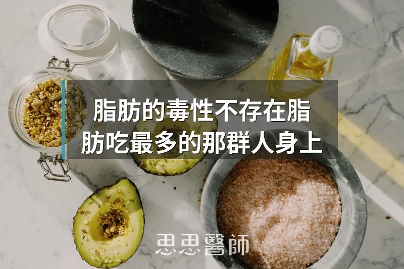

脂肪的毒性不存在脂肪吃最多的那群人身上

我在門診曾經遇過一個有趣的情況：一位病人來做年度健檢，他跟我說他這半年改成低碳飲食，油脂吃得比以前多很多，肉類、堅果、酪梨從不忌口。我心裡想，三酸甘油酯應該會高。
結果報告出來，他的三酸甘油酯是 78 mg/dL，比之前吃「均衡飲食」時低了將近一半。
這個矛盾值得認真解釋一下，因為它直接牽涉到一個常見的誤解：脂毒性（Lipotoxicity）是吃脂肪吃出來的。事實不是這樣的。而且搞清楚這件事，對理解胰島素阻抗的根本機轉非常重要。
血液裡的三酸甘油酯，大部分不是從你的盤子直接來的
很多人以為吃了油脂，血液裡的三酸甘油酯就會升高，就像吃了鹽血壓就高一樣直觀。但這個連結在代謝上並不那麼直接。
你吃進去的脂肪，在腸道裡被分解成脂肪酸和甘油，重新包裝成乳糜微粒（Chylomicrons）進入淋巴，再送進血液。這個過程是暫時性的，在餐後幾個小時內，這些脂質就會被周邊組織取用，血液裡的三酸甘油酯會回到基準值。
真正讓空腹三酸甘油酯長期偏高的，主要有兩個來源，而這兩個來源，都不是你直接從餐盤吃進去的脂肪。
第一個來源：肝臟自己製造的脂肪
當你攝取過多碳水化合物，尤其是果糖和精製糖，超過身體當下的能量需求和肝醣儲存容量，肝臟就會把多餘的碳水化合物轉化成脂肪，這個過程叫做肝臟新生脂質合成（Hepatic De Novo Lipogenesis，DNL）。這些新生的脂肪會以極低密度脂蛋白（VLDL）的形式送出肝臟，進入血液循環，最終呈現為升高的三酸甘油酯數值。
大量碳水化合物，尤其是果糖和精製醣，是驅動肝臟新生脂質合成（DNL）最主要的飲食因素。2025 年一篇發表於 Nutrients 的回顧研究顯示，採用生酮飲食的受試者，在六天之內肝臟三酸甘油酯就下降了 31%，而體重幾乎沒有變化。
第二個來源：脂肪組織「裝不下了」之後溢出的游離脂肪酸
你的脂肪細胞有儲存容量上限。當長期熱量過剩，脂肪細胞持續擴張，最終會進入功能失調的狀態：它開始不受控制地把游離脂肪酸（Free Fatty Acids，FFA）倒進血液。
正常情況下，胰島素會抑制脂肪細胞裡的激素敏感性脂酶（HSL），讓脂肪在不需要的時候乖乖留在脂肪組織裡。但當脂肪組織本身也出現胰島素阻抗，這個抑制就失效了，脂肪細胞開始在不對的時機持續釋放游離脂肪酸進入血液，即使你剛吃飽也一樣。
2025 年《Frontiers in Endocrinology》的一篇回顧研究把這個現象稱為系統性脂毒性（Systemic Lipotoxicity）：功能失調的脂肪組織讓過量的游離脂肪酸溢出，超過身體正常的處理能力，最終讓脂肪堆積在不應該堆的地方。
脂毒性真正的意思：脂肪進了不該去的細胞
脂毒性（Lipotoxicity）這個概念最早在 1994 年被提出，指的是：當脂質中間代謝產物在非脂肪組織（骨骼肌、肝臟、胰臟 beta 細胞）裡過度累積，這些物質會直接干擾細胞的訊號傳遞，破壞胰島素反應，甚至讓細胞死亡。
讓這個問題發生的脂肪，不是你盤子裡的油脂，而是兩個來源的匯流：一是肝臟從過量碳水化合物自製的脂肪，二是因為脂肪細胞功能失調、容量過載而不斷溢出的游離脂肪酸。
用一個比喻來說：城市裡有一個垃圾場（脂肪組織），有固定容量。正常的代謝是垃圾（多餘熱量）被運到垃圾場消化。問題發生在兩種情況：第一，工廠（肝臟）因為碳水化合物供應過剩，自己大量製造垃圾，垃圾場根本消化不完；第二，垃圾場本身過載崩潰，開始往周邊社區（肌肉、胰臟、心臟）亂倒垃圾。這些垃圾倒進不該去的地方，就是脂毒性。
為什麼低碳、高脂肪的人反而沒有這個問題
現在回到一開始的矛盾：這些吃了大量脂肪的人，為什麼三酸甘油酯更低，脂毒性反而更少？
低碳減少了肝臟新生脂質合成的原料。碳水吃得少，肝臟沒有多餘的碳水可以轉化成脂肪，VLDL 的生產量就下降，血液裡的三酸甘油酯跟著降。2025 年一項整合 17 個隨機對照試驗、共 1,197 名受試者的統合分析顯示，低碳飲食讓三酸甘油酯平均降低了 19.91 mg/dL（p < 0.00001），同時 HDL 也顯著上升。
低碳讓胰島素維持在低濃度，脂肪燃燒的路徑是開著的。胰島素低，脂肪細胞可以在需要時正常釋放游離脂肪酸，而這些游離脂肪酸在低碳環境下會被直接拿去燃燒或轉換成酮體，不會在肌肉和肝臟裡堆積。
吃進去的脂肪被有效率地利用了，而不是儲存在不對的地方。這群人的脂肪組織功能通常是正常的，因為胰島素阻抗程度低，脂肪細胞不會有「失控溢出」的問題。
這也是為什麼三酸甘油酯可以作為一個代謝健康的指標：它反映的不只是你吃了多少脂肪，而是你的肝臟有沒有在大量自製脂肪、你的脂肪組織有沒有在失控釋放游離脂肪酸。低三酸甘油酯，往往代表這兩件事都沒在發生。
脂毒性的高危族群，不是吃油最多的人
根據目前的機轉，脂毒性的高風險族群，是長期攝取大量精製碳水和果糖、同時久坐、脂肪細胞因為長期過載而功能失調的人。這些因素共同讓肝臟自製脂肪的量大增，同時讓脂肪組織喪失正常的調控能力，最終讓游離脂肪酸和脂質代謝副產物開始堆積在不該堆的地方。
反過來說，一個低碳飲食者，即使吃了很多脂肪，只要代謝功能正常、脂肪氧化路徑是開著的、沒有脂肪細胞過載的問題，他身上發生脂毒性的風險，比一個天天喝含糖飲料、久坐辦公室的「均衡飲食者」低得多。這個現象，我覺得值得更多人知道。
參考資料
5. Ying W, et al. From lipotoxicity to pan-lipotoxicity. Cell Discov. 2025;11:38. PMID: 40102396
（本文由我規劃架構與觀點，並協同 AI 校正與潤飾語句）
 空腹小雞跟思思醫師一起斷食，順便養一隻小雞來養小雞 →
空腹小雞跟思思醫師一起斷食，順便養一隻小雞來養小雞 →
好朋友週信
每週五一封：《健康駭客週報》這集的研究重點，加上家醫專欄這週的新文章。免費，隨時可以退訂。
延伸閱讀

鯖魚斷食的斷後心得
作者自己做五天鯖魚斷食，氣酮升到 23.0 ppm、空腹血糖由 107 降到 85 mg/dL，並討論其限制，屬個人經驗分享。

鯖魚斷食，和傳統斷食差在哪裡
魚斷食透過高蛋白保肌肉、高Omega-3啟動FGF-21和脂肪燃燒，進入類斷食代謝狀態卻難達深層自噬，相比水斷食各有不同機轉側重。

白飯和糖，身體其實分不出來
David Ludwig 主張白飯等精緻澱粉與糖在體內都快速變成葡萄糖並推高胰島素，建議以全穀、豆類、原型澱粉取代精緻澱粉。